使用 Watson Natural Language Understanding 构建推荐引擎
IBM® Watson™ Knowledge Studio 是一项可为特定领域创建自定义语言分析模型的服务。这对于具有复杂用语的专业性较强的行业（如医学、法律和金融）特别有用。
在本教程中，您将了解如何使用 Watson Knowledge Studio 来为客户对汽车修理厂的评论添加注释。在为评论添加注释后，您可以训练一个机器学习模型来用于分析评论。此模型可以确定车辆需要哪种类型的维修，以及客户对工作质量的满意程度。通过分析与给定汽车修理厂相关的评论，可以生成有关该修理厂整体绩效的洞察，从而确定他们最擅长（和最不擅长）的维修类型。
前提条件¶
要遵循本教程，您需要一个 IBM Cloud 帐户。如果您还没有该帐户，则可以创建一个。
配置 Watson Natural Language Understanding 实例¶
在您获得 IBM Cloud 帐户后，导航到 IBM Cloud 控制台。
- 单击 Catalog。
-
搜索 Natural Language Understanding，然后单击所出现的图标。

-
为 Watson Natural Language Understanding 服务选择一个定价套餐，然后单击 Create。

在配置该服务后，存储 API 密钥和 URL。在本教程的后面部分中将需要使用这些凭证。
配置 Watson Knowledge Studio 实例¶
要配置 IBM Watson Knowledge Studio 实例，请执行以下操作：
- 单击 Catalog。
-
搜索 Knowledge Studio，然后单击所出现的图标。
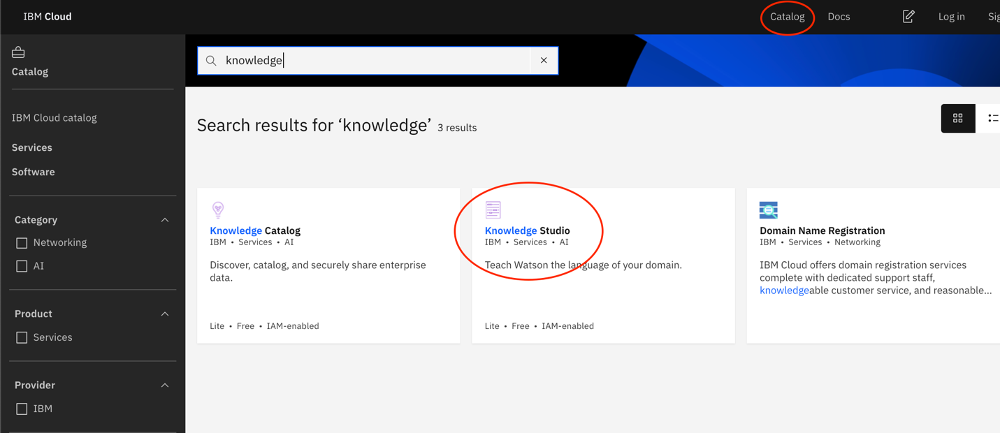
-
选择一个定价套餐（在这里选择“Lite”就足够了），然后单击 Create。
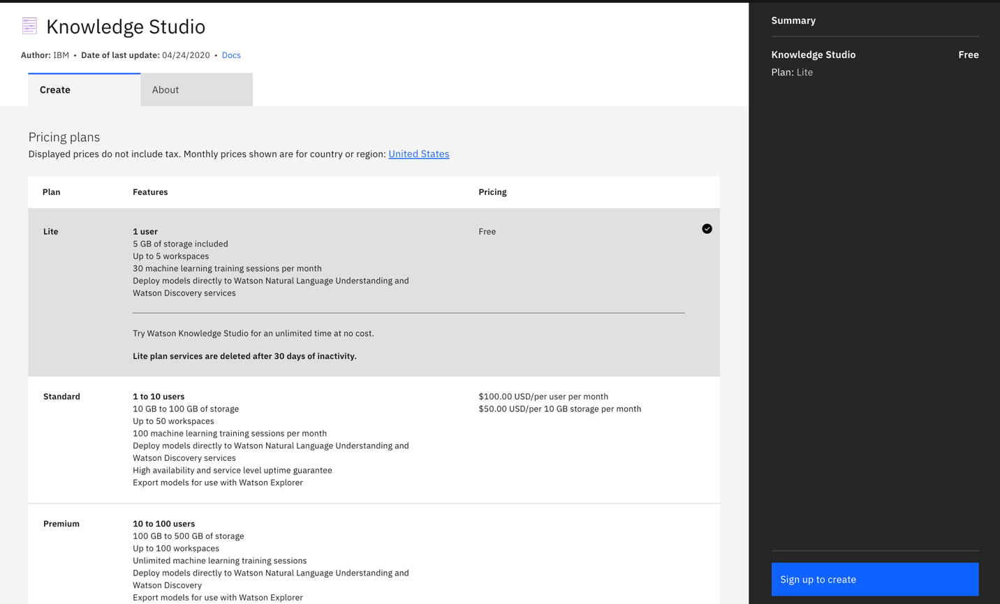
-
在配置该服务后，单击 Launch Watson Knowledge Studio。

预估时间¶
在满足了前提条件之后，完成本教程大约需要 60 分钟。
步骤¶
定义实体和实体子类型¶
首先创建实体类型。实体是对象或概念的一种表示形式。在此例中，您将创建几个与汽车修理相关的实体，例如 Mechanic、Vehicle 和 Repair。首先，您将创建一个 Repair 实体，该实体描述了导致车辆需要修理的问题。
-
单击左侧菜单中的 Entity Types。
-
单击 Add Entity Type。

-
将新实体标记为 Repair。
-
添加子类型，以便进一步对实体实例进行分类。例如，对交流发电机或火花塞的引用可以标记为 Repair 实体的 Electrical 子类型。

现在您已经了解了如何创建实体，接下来可以上载预配置的实体类型列表。下载 JSON 类型，然后单击 Upload。

在上载并创建实体类型后，单击 Save。
创建关系类型¶
关系类型描述了两个实体之间的关联方式。例如，如果您具有 Vehicle、Customer 和 Mechanic，则车辆可能与客户存在 OwnedBy 关系，并与修理技师存在 RepairedBy 关系。
-
通过单击菜单中的 Relation Types 来创建关系。
-
单击 Add Relation Types。
-
为该关系类型命名，并列出可存在该关系的有效实体对。
在上一步中应该已上载了一组关系类型。此例中的示例包括：
- RepairedBy（Vehicle 可以被 Mechanic 修理）
- OwnedBy（Vehicle 可以被 Driver 拥有）
- DamagedBy (Vehicle 可以被 Driver 或 Mechanic 损坏）

收集用于描述领域用语的文档¶
收集包含用于描述汽车损坏和维修的文本示例的文件。Watson Knowledge Studio 可通过这些示例来学习相关的*领域用语*，包括汽车修理技师常用的术语和短语。在此示例中，我们使用了用于描述客户对各个修理技师的评价的客户评论。
我们提供了一组预先注解的综合评论作为起点，您可以下载这些评论。
如果想要使用一些实际的调查数据来训练数据模型，则可以使用 Yelp 数据集，您可以根据 Yelp 使用条款来访问此数据集。该数据集包含一个 JSON 文件，其中包括关于美国各地汽车修理厂的数百万条评论。必须将每条评论放入单独的 .txt 文件中。
在收集文档后，需要将它们上载到 Watson Knowledge Studio 中。登录到 Watson Knowledge Studio 实例，然后单击 Documents。
-
单击 Upload Document Sets。

-
将文档拖到 Add a Document Set 部分中，以上载这些文档。

为文档添加注释¶
在创建实体和关系类型后，您可以添加注释，以便将每个文档的词语和短语映射到您定义的实体。
-
单击 Machine Learning Model，然后单击 Annotations。
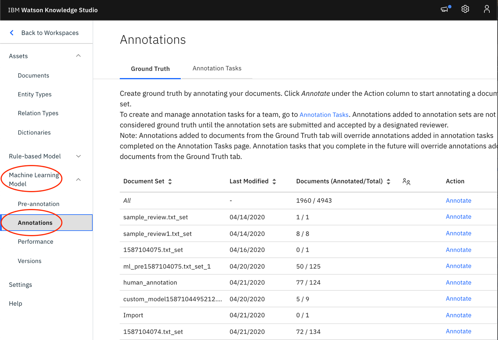
-
找到您先前上载的文档集，然后单击 Annotate。
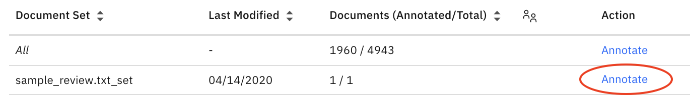
-
通过选择每个相关词语或短语，开始为文档中引用了某个已定义实体的所有提及添加注释。
-
单击右侧菜单中对应的实体类型。
我们在图像中应用以下注释。
- SUVs 和 Motorcycles 可以标记为 Vehicle 和子实体 Type。
- Glass Repair 和 Body Work 可以标记为 Repair 实体和 Glass / Body 子类型。
- Joe's Auto Repair、Joe、Lydia 和 they 指的是修理技师。

-
通过单击 Relation（在下图中显示为黑色）来定义实体之间的关系。
在此示例中，My 是对客户或评论者的引用。Car 由客户拥有，因此它被标记为 Vehicle 实体，并且与客户存在 belongsTo 关系。提及 suspension 具有 Repair 实体，并且与车辆存在 needsRepairType 关系。
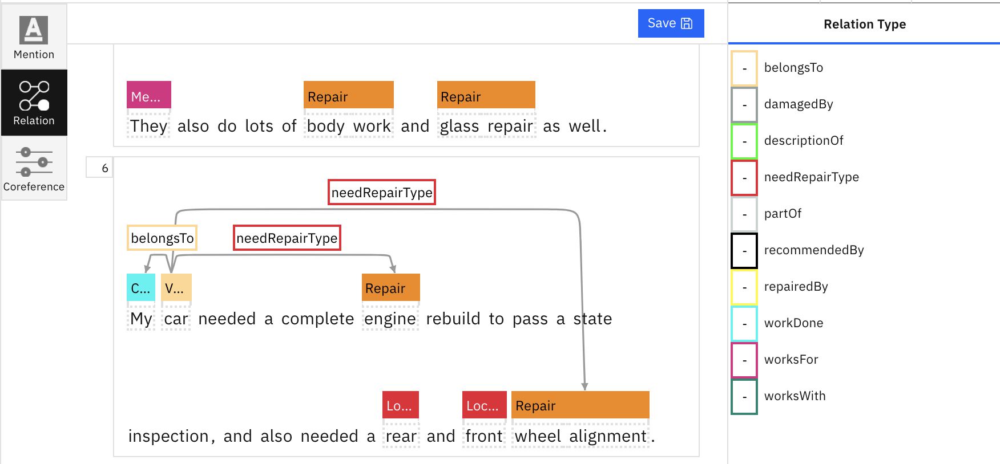
-
添加共同引用，当有多个不同提及引用了同一实体时便会发生共同引用。在此例中，Joe、his 和 he 都指的是同一个 Mechanic 实体。要将它们绑定在一起，请选择 Coreference，然后单击每个引用。然后，双击最后一个实体提及以应用共同引用。
成功应用后，每个共同引用下应出现一个小数字。
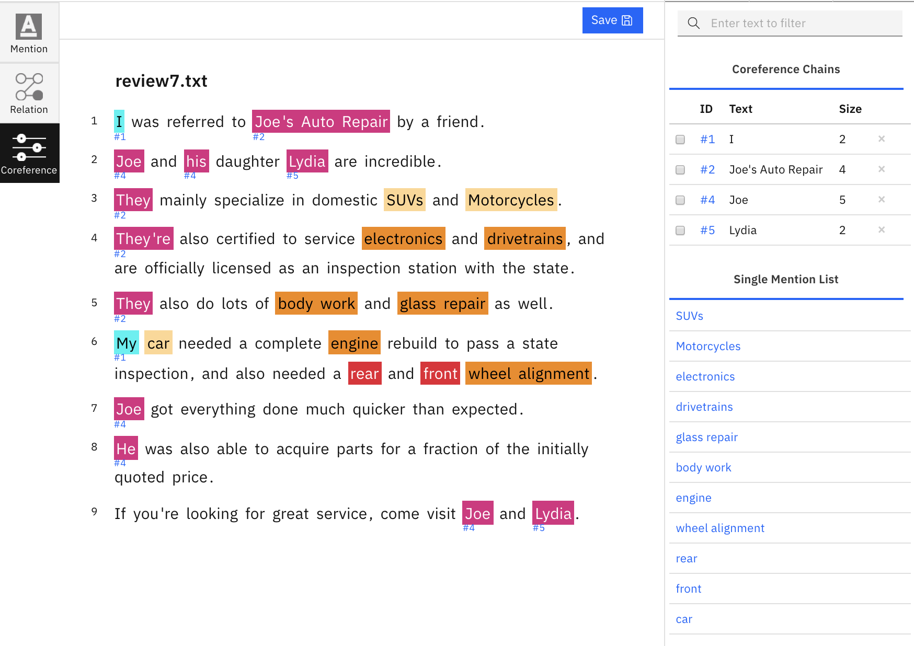
生成机器学习模型¶
在为几个文档添加注释后，您可以训练机器学习模型来为其余未标记的文档添加注释。也可以通过 API 来公开该模型，我们将在下一步中展示此操作。
-
通过选择 Performance 来创建模型。
-
单击 Train and evaluate。
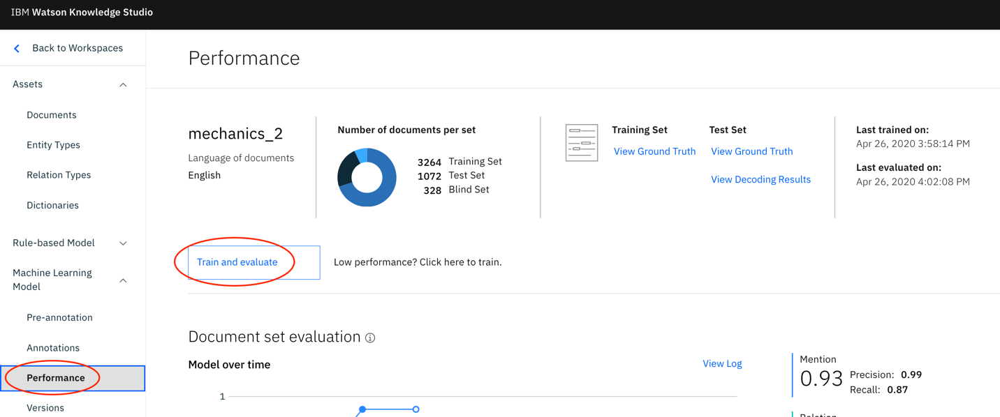
-
如果要选择接受特定文档的训练，或者调整您的测试、训练和盲训练子集，请单击 Edit Settings。
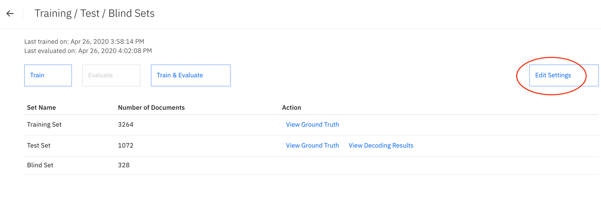
-
确认您的训练设置，然后单击 Train & Evaluate。
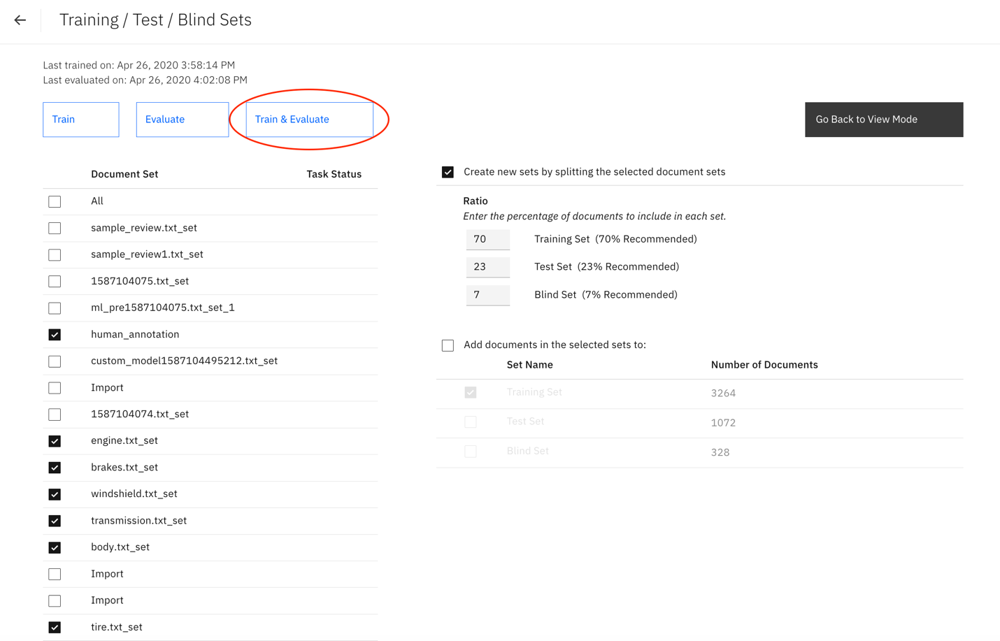
完成训练后，您可以将自定义的机器学习模型部署到 Watson Natural Language Understanding 服务。此部署通过 API 创建自定义的机器学习模型。
-
单击 Versions 来查看经过训练的模型，然后单击 Deploy。
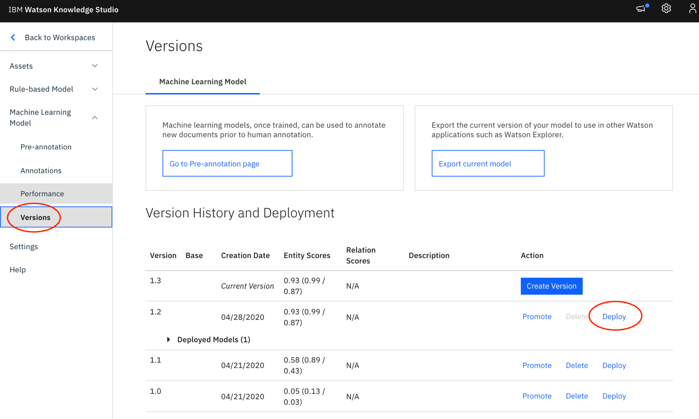
-
选择 Natural Language Understanding，然后单击 Next。

-
选择您的地区、资源组和服务名称，然后单击 Deploy。
完成部署后，您应该在 Deployed Models 列表中看到一个新条目。展开该条目以获取您的模型 ID。

将模型部署到 Watson Natural Language Understanding¶
现在，您应该能够通过将数据发布到 API 来测试模型。为此，您将需要以下凭证。
- Natural Language Understanding API 密钥
- Natural Language Understanding URL
- Watson Knowledge Studio 部署模型 ID（已从上一部分的末尾获取）
通过导航到 Watson Natural Language Understanding 实例页面并查看 Credentials 部分，可以找到 Natural Language Understanding API 密钥和 URL。
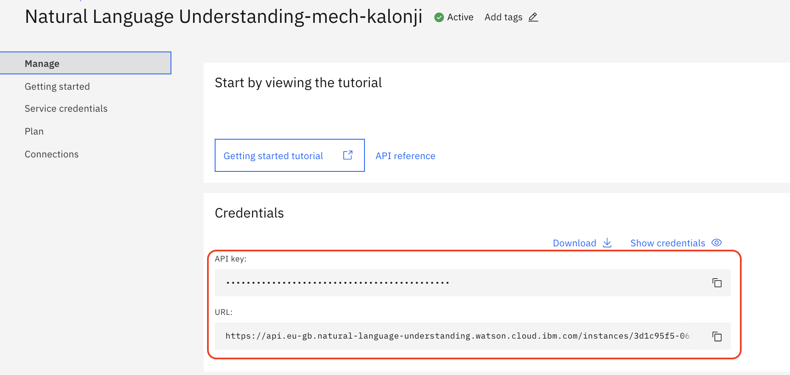
使用以下代码来创建一个 .json 文件。在该文件中，将 model_id 替换为 Watson Knowledge Studio 生成的部署 ID。另外，在 <input text> 部分中插入以下文本：My truck windshield was cracked, so I went to Joe's Auto shop and they replaced it for me.They did an excellent job.I would highly recommend them。
{
"text": "<input_text>",
"features": {
"entities": {
"model": "<model_id>"
},
"keywords": {
"emotion": true,
"sentiment": true
},
"emotion": {
"sentiment": true
},
"categories": {
"sentiment": true
},
"relations": {
"model": "<model_id>"
},
"sentiment": {}
}
}
运行 curl 命令以使用生成的机器学习模型来分析文本。确保使用您的服务凭证更新了 nluApiKey 和 nluUrl 字段。另外，还要添加 .json 文件的路径。
curl -X POST \
-u "apikey":"<nluApiKey> \
-H "Content-Type: application/json" \
-d @<path to json file> \
"<nluUrl>/v1/analyze?version=2019-07-12"
在 sentiment 部分中，您会看到该评论被标记为肯定。在 entities 部分中，您可以识别出已完成了哪些维修。
"sentiment": {
"document": {
"score": 0.952598,
"label": "positive"
}
},
"entities": [
{
"type": "Repair",
"text": "windshield",
"disambiguation": {
"subtype": [
"Glass"
]
},
"count": 1,
"confidence": 0.994622
},
结束语¶
在本教程中，您了解了如何为一组文档添加注释以对评论进行准确分类。在随后的 Code Pattern 中，您将了解如何汇总每个修理技师的 Natural Language Understanding 结果并确定某种给定维修类型的最佳修理技师。本教程是构建客户服务解决方案的一部分，可帮助客户管理保险索赔并获取汽车服务信息。
本文翻译自：Build a recommendation engine with Watson Natural Language Understanding（2020-06-29）